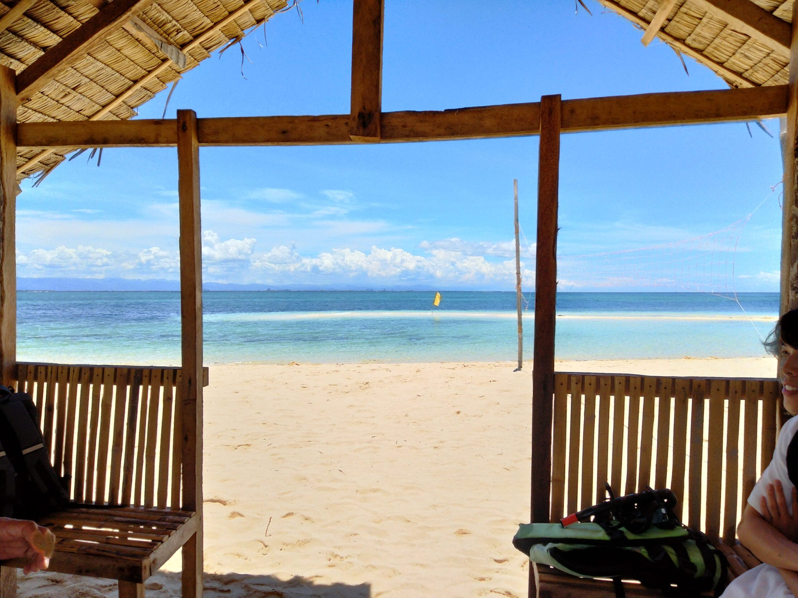

Portfolio
-
医療系HP
小児科医院をイメージしたHP。HTML・CSS・JSにて実装しております。
LP(ランディングページ)
-

英語ブログ
WORDPRESS無料テーマのcocoonを利用、一部HTML・CSS・PHPを改修にて実装しております。
-

トラベルブログ
ゼロからWORDPRESSのテーマ化済み、HTML・CSS・PHPにて実装にて実装しております。
BLOG
-
企業系HP
HTML＋CSSにて実装しております。
模写コーディング
About
-
本サイトについて
- 本ポートフォリオページは営業用の作品を掲示するもの。
- 受注可能な仕事：
- ・WEB制作（HPやLPのHTML・CSS・JQueryでの実装）
- ・Wordpressサーバ構築＋HPデザイン・構築